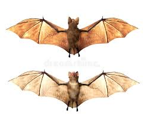

Valley Falls Vampire Bat
About Vampire Bat
Vampire bats, species of the subfamily Desmodontinae,
are leaf-nosed bats found in Central and South America.
Their food source is blood, a dietary trait called hematophagy.
Three extant bat species feed solely on blood: the common vampire bat, the hairy-legged vampire bat, and the white-winged vampire bat.

Facts about Vampire Bats
- Vampire bats have fewer teeth than any other bat because they do not have to chew their food.
- Along with flying, vampire bats can run, jump, and hop with great speed, using their chest muscles to fling themselves skyward.
- Scientists recently discovered that the anticoagulant in vampire bat saliva is twenty times stronger than any other known anti-clotting agent.
- With more research we may find this substance can help with serious human disorders like heart attacks and strokes.
Link to Index page